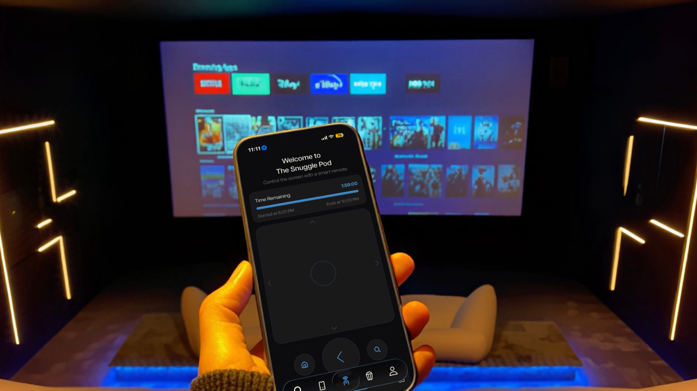
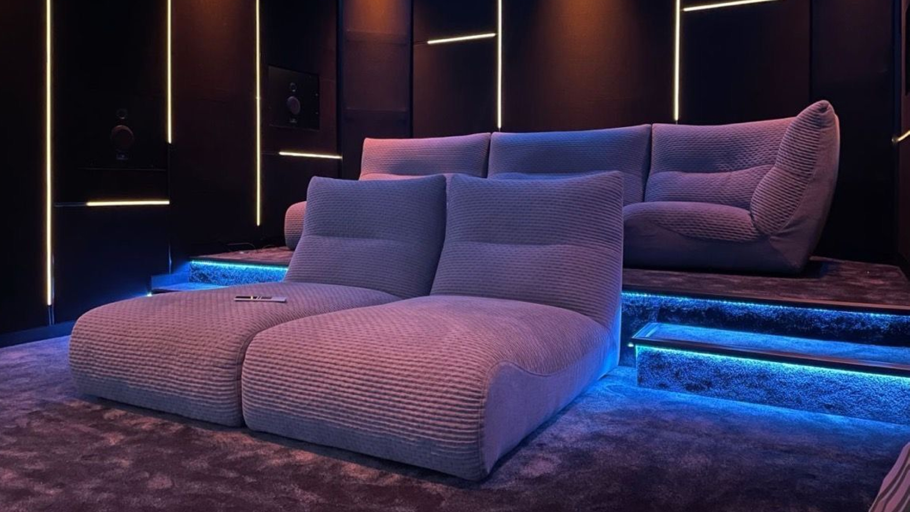
Service design · Mobile · 2025
neuk lets friends book a private screening room, so streaming becomes a night out again. One booking is the ticket, the door key, and the remote.
Problem
Everyone wants to watch together. Nobody has the room.
In cities like New York, apartments are small and shared, and the third spaces that could hold a group cost money and fill up fast. Friends still want to gather for the finale, the premiere, or the big game, but every place they can go gives something up.
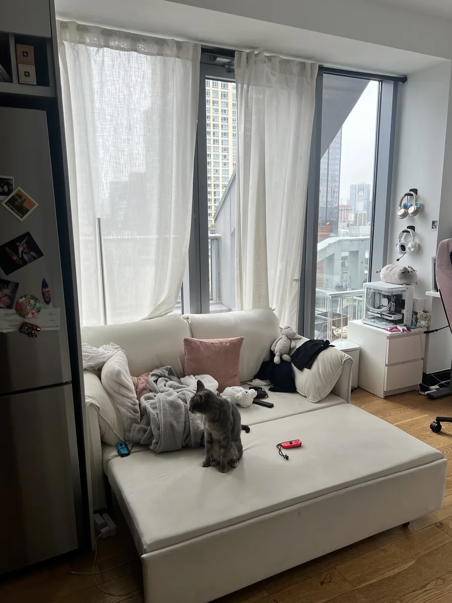
An apartment
Too small for the group, and someone has to host and clean up.
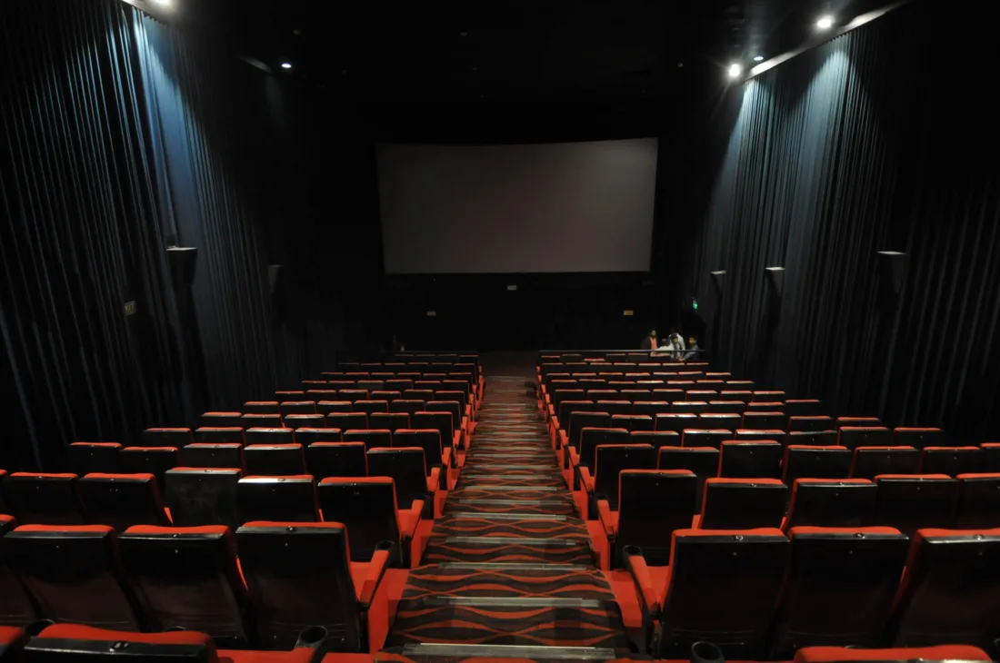
A movie theater
A great screen, but no talking and no say in what’s playing.
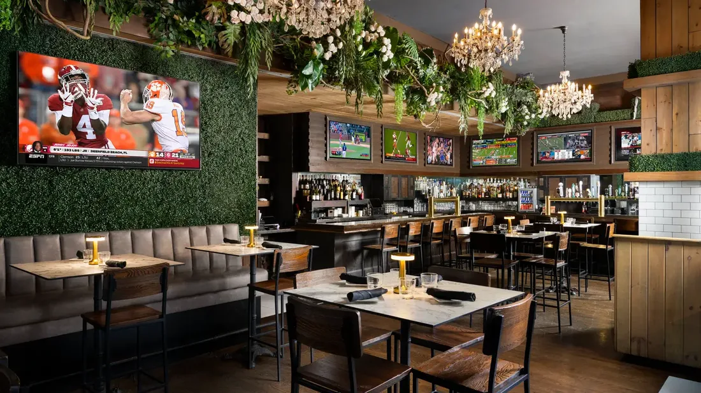
A bar
Social, but loud, crowded, and stuck on whatever’s on.
Opportunity
How might we create a shared viewing experience that combines the comfort of home, the quality of a theater, and the social energy of going out?
Solution
Book a room. Check in with your phone. Stream anything.
neuk rents private screening rooms by the hour. One friend books a room sized for the group, everyone walks in with a QR ticket, and their phones become the remote for every streaming service.
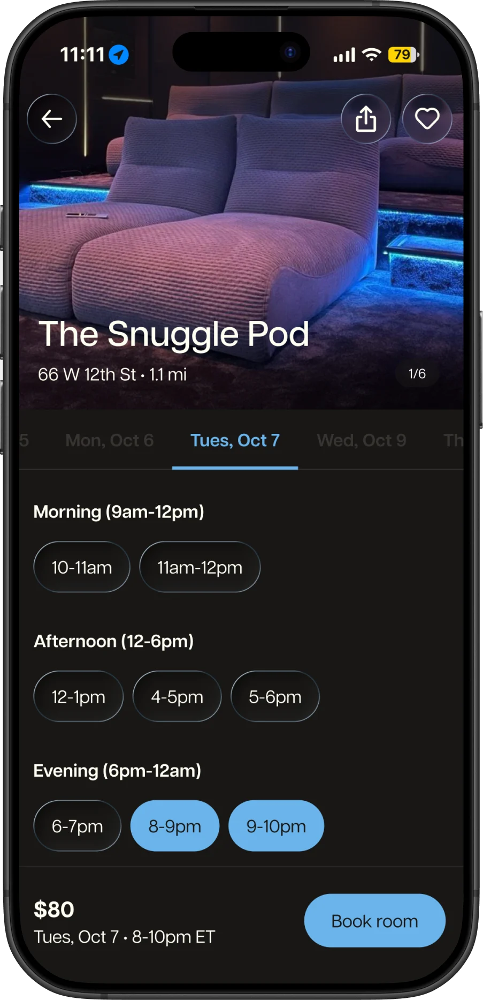
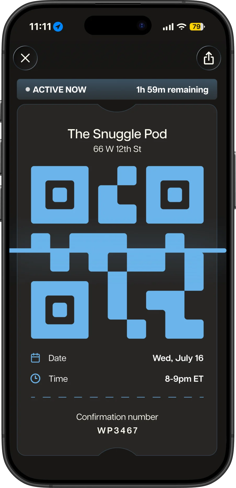
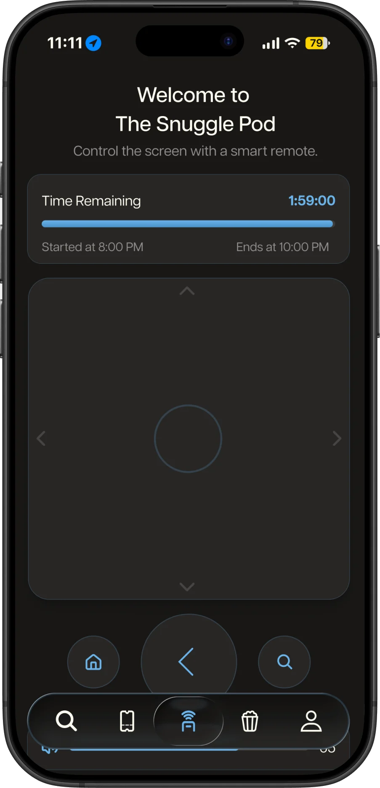
Book
Filter by date, group size, and neighborhood. Every room shows its size, price, and open time slots before anyone commits.
Check in
The confirmation is a QR ticket. It opens the room’s door, so nobody waits at a front desk.
Stream
Scan the code on the screen and the phone becomes the remote. Everyone signs in to their own services, and the logins are wiped when the session ends.
Three room sizes, priced by the hour
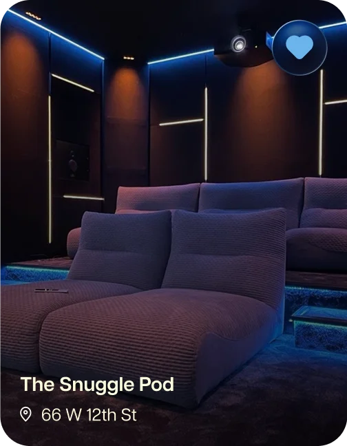
Pod · 1–4 people
$40 an hour. Date nights, small hangs, and cozy watch parties.
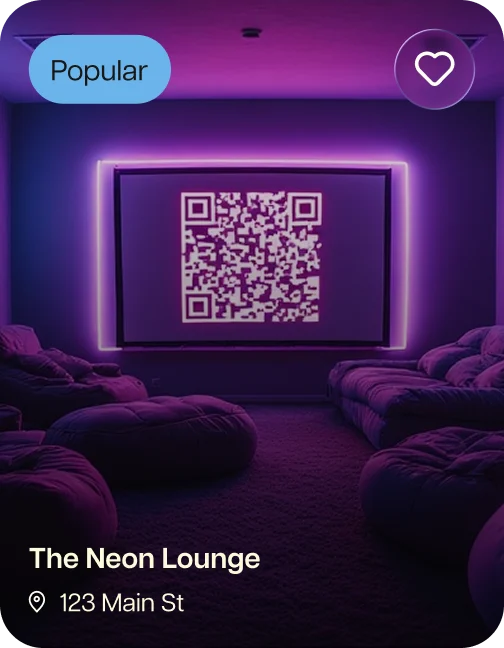
Lounge · 5–10 people
$80 an hour, 2-hour minimum. About $20 each for eight friends.
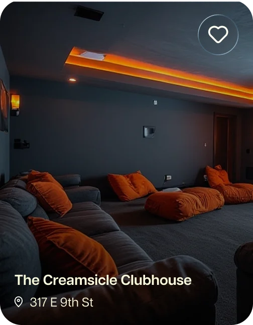
Clubhouse · 11+ people
$110 an hour. Parties, big games, and marathons.
Core features
One booking becomes the ticket, the key, and the remote.
Four moments take a group from “we should watch this together” to sitting in the room: discover, book, enter, and stream.
Feature 01 · Discover
Match the room to the group.
Filter by location, date, and room size. Room cards lead with big photos, and every size is explained before you choose.
Feature 02 · Book
Pick a slot, pay once, get a ticket.
The room page leads into evening time slots and a clear price breakdown. The confirmation becomes the group’s QR ticket.
Feature 03 · Enter
The ticket is the key.
A reminder lands an hour before. At the door, the QR ticket unlocks the room, and staff have already reset it for the group.

Feature 04 · Stream
The phone is the remote.
Scan the code on the screen to pair. The remote runs every streaming service and shows how much time is left, and past and upcoming bookings stay in the app for next time.

High fidelity
Twelve screens, from the first search to the remote.
The final design leads with the room. Dark screens keep the focus on the photos, and one blue accent marks what to tap next.
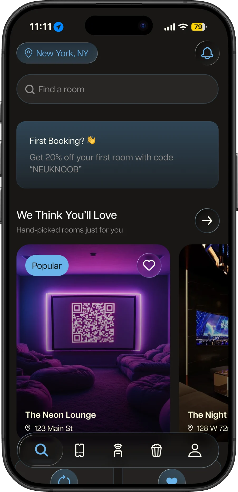
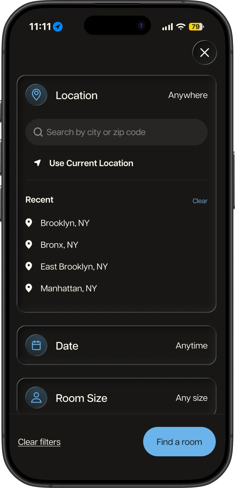
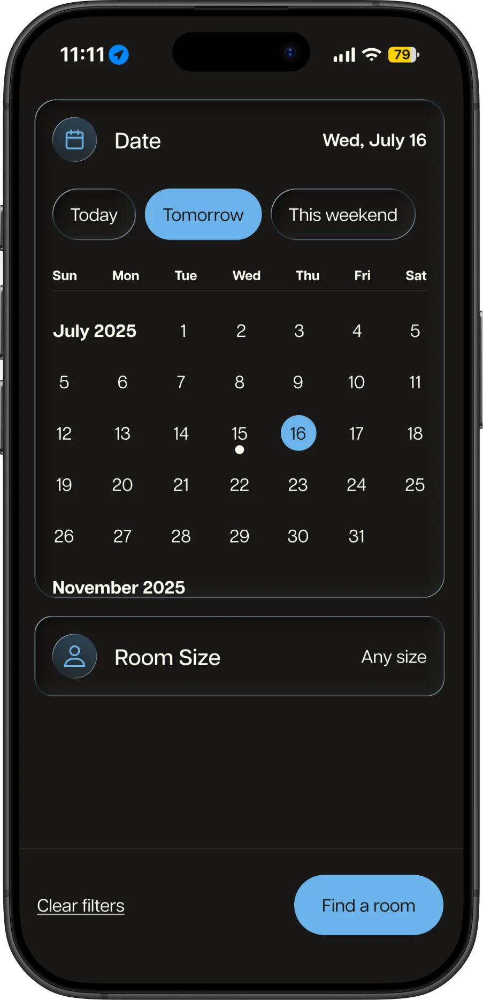
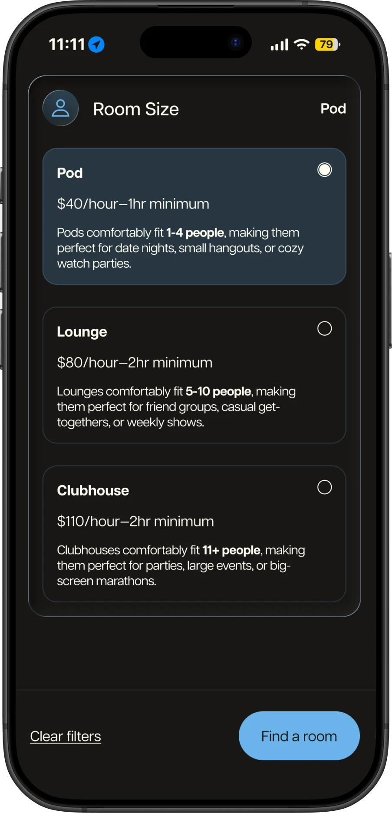
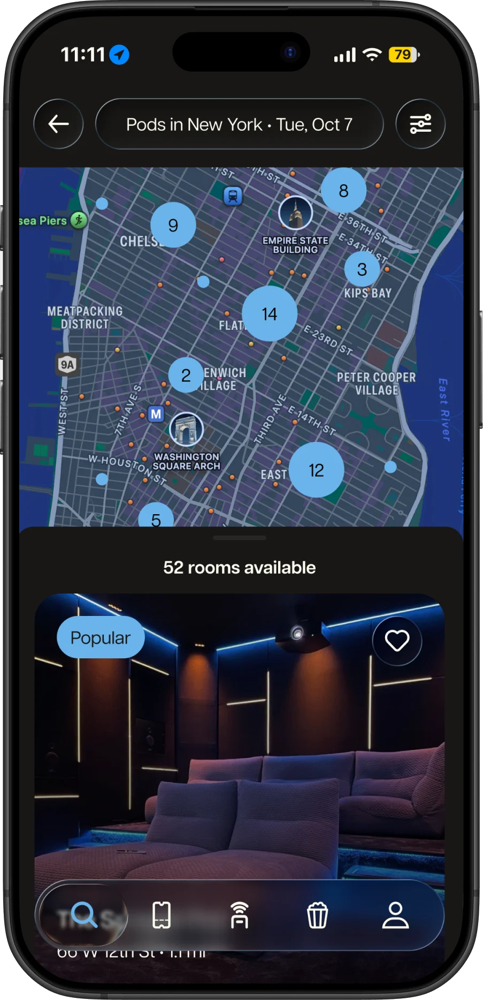
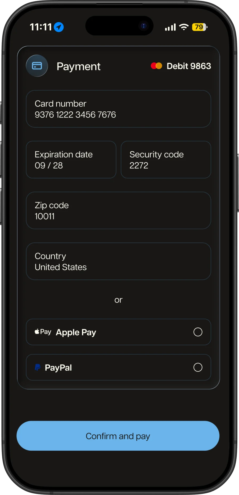
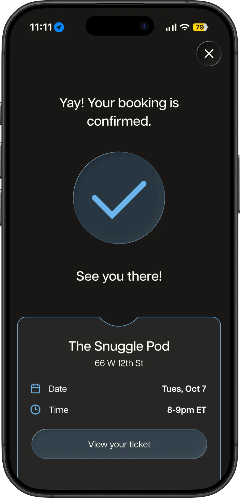
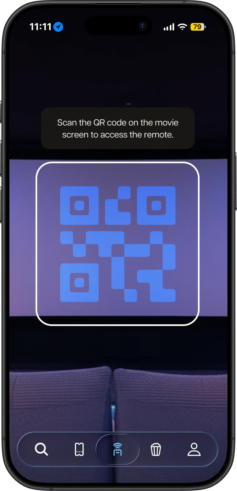
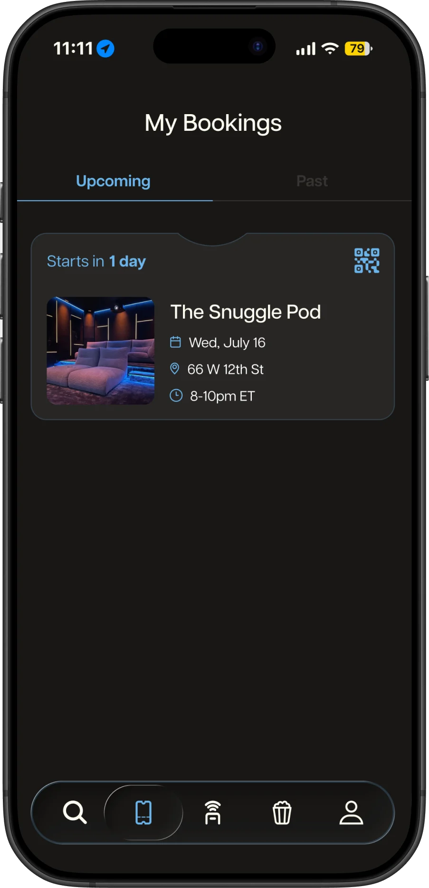
Research
People don’t go out to watch a movie. They go to be together.
I started with the market, then talked to people. A competitive analysis showed the gap between the places people already watch together. Interviews showed what keeps them from doing it more.
Competitive analysis
Every option gives something up. None has it all.
I compared movie theaters, apartments, and public spaces like bars and watch parties on what they offer and where they fall short. Theaters have the screen, apartments have the comfort and control, and bars have the energy. Nothing offered all of it in a private room.

User interviews
Small apartments, big groups, and a group chat that never decides.
A screener found six people who watch with friends regularly. I interviewed each one about how they watch, where, and what gets in the way, then sorted the notes into an affinity map.
01
A middle ground between home and theater
Home is comfortable but cramped and a chore to host. Theaters are immersive but rigid and impersonal.
02
Planning is the pain
Finding a time, getting everyone there, and splitting the cost kill the plan before it starts.
03
The people matter more than the movie
Time with friends is the draw, and many want a plan that isn’t built around drinking.
04
Worth it when it’s split
Price worried people until it was framed per person: a private theater night for about $20 each.
System thinking
Every tap in the app has a job in the room, so I designed both as one service.
Personas kept the work tied to real people. A system map set the app’s structure, a service blueprint lined up every screen with the staff and systems behind it, and a PRD set what the first version had to do.
Personas
Three people the service has to work for.
Each persona combines two interviewees with similar habits and needs.
The Social Host
“I love hosting. My space just isn’t super conducive to it.” She plans the themed nights, then cleans up after them.
The Cinephile
Waited nine years to see Interstellar on a big screen again. Wants the theater experience with friends, on their schedule.
The Budget Weekly Watcher
Watches the same show every week with the same friends. The ritual only works if it’s cheap enough to repeat.
System map
Five tabs, built around one loop.
The app is organized around the booking loop: find a room, get the ticket, pair the remote. Food and drink got its own tab in the map, but I scoped it out of the first version.
Service blueprint
One visit, from the first search to the room reset.
The blueprint follows a group through five stages and lines up what they do, what they see in the app and the room, what staff do behind the scenes, and the systems underneath. Food and drink lives here as a staffed service, ready for the app when it’s designed.
PRD
A PRD kept version one to the booking loop.
I wrote a PRD for “Watch Party Rooms,” the working title, to define the problem, the users, and what the first version had to do.
In version one
Browse and filter rooms, book and pay, a QR ticket that opens the door, and a phone remote.
Mapped for later
Food and drink ordering, split payments, and one in-room screen for every streaming service.
How it would succeed
Repeat bookings: the same friends booking the same room again, like karaoke or bowling.
Iterations & testing
People wanted cozy but elevated: the energy of going out with the comfort of home.
Before designing screens, I tested the vibe. That set up three visual directions, and a low-fidelity flow showed what the screens had to fix.
Concept testing
Participants sorted rooms and food into what was and wasn’t their vibe.
Like a card sort with pictures: each participant sorted rooms, food and drink setups, and app features into my vibe, could sometimes be my vibe, and not my vibe, and left comments on what drew them in. Open the deck ↗
01
Not extremes
People gravitated to a balance of social energy and homey comfort.
02
Cozy but elevated
Warm lighting and soft seating, with a screen worth leaving home for.
03
Not a club
Neon, party-like spaces felt too distracting or impersonal for most.
Directions
Three directions, each pushing one extreme.
Lume leaned into the quality of a theater, neuk into the comfort of home, and Streamie into the energy of going out. The final design keeps the best of the first two.
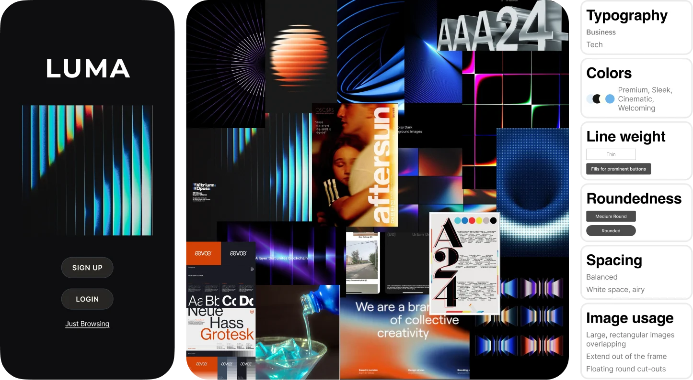
Kept
The dark palette, one blue accent, and thin 1px lines. It felt premium and cinematic.
Left behind
Neon gradients and stark type: right for a theater, cold for a night in with friends.
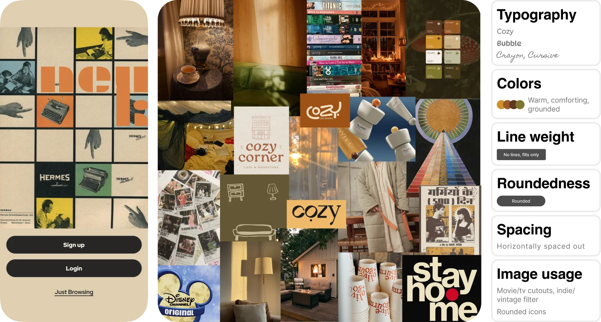
Kept
The name itself, rounded shapes, and a warm cream in place of stark white.
Left behind
The vintage collage and earthy browns, which read more nostalgic than night out.
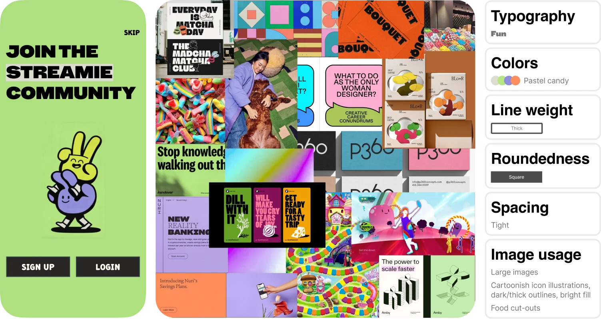
Kept
The social energy: it felt like a group plan, not a solo stream.
Left behind
Candy colors and thick outlines, too loud for cozy but elevated.
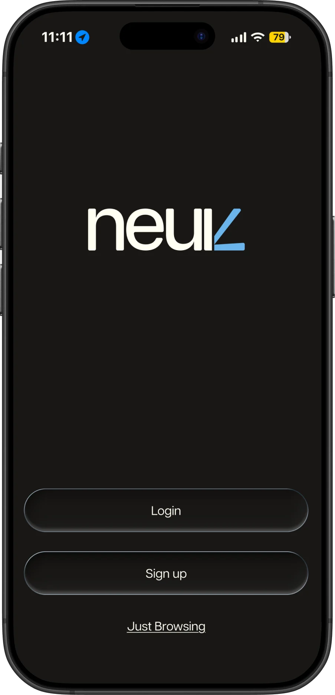
Cozy but elevated
Dark like a theater, warm like home: deep gray instead of black, cream instead of white.
One accent
Blue marks what to tap. Everything else stays quiet so the rooms lead.
Rounded, never sharp
Cards, pills, and buttons are rounded, from neuk.
Thin lines and glass
1px strokes and glass buttons from Lume keep it sleek without the neon.
Low-fidelity testing
Testers wanted to see more, be told more, and control less.
Eight testers left notes screen by screen, from room cards that were too small to confusion about what happens after booking. Drag or scroll the strip to read them.
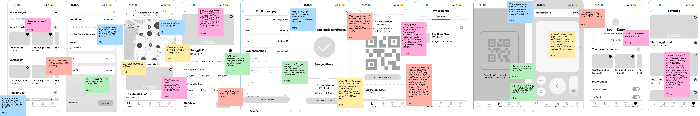
Lainey
Bigger room cards
“Room cards are too small.” Cards grew, and more of each photo shows.
Paul
Guidance after booking
“I’m confused on the process after booking it.” A reminder, the ticket, and a welcome in the room now walk the group through.
Grace
A simpler remote
“Just on/off works for me.” The full color wheel for the lights became a simple toggle.
Branding
Cinematic enough for a night out, cozy enough to feel like home.
I started by deciding what neuk is and isn’t, ran a naming sprint, and sketched the mark by hand. The system takes Lume’s dark palette, blue accent, and thin lines, and neuk’s name, rounded shapes, and warm cream.
What neuk is
Convenient, social, and cozy. It feels easy, like a party, and like home.
What neuk isn’t
Complicated, restrictive, or a big commitment.
The name
Nook, a corner that offers seclusion, plus 아늑한 (aneukhan), Korean for cozy. The k is drawn as a corner: your own nook in the city.
Next steps
Next, the parts of the night the app doesn’t cover yet.
The booking loop works end to end. Three questions are still open, and the service would need a way to launch.
How might we…
01
…imagine the food and drink ordering page?
It’s mapped in the service blueprint, with a kitchen and a runner behind it. The menu, cart, and order status screens come next.
02
…imagine a Splitwise-style way for friends to pay, right in the app?
So one friend doesn’t front the whole room and chase everyone for their share.
03
…imagine the movie screen’s interface, with every streaming service in one place?
So the group isn’t juggling logins and remotes once the lights go down.
If neuk launched, it would start in rooms that already exist
01
Rent before building
Pilot in karaoke rooms and older auditoriums during off-peak hours. Add a big screen and the neuk remote, and test demand without building anything.
02
Watch for repeat groups
The signal is the same friends booking again, not first-time curiosity.
03
Then build neuk rooms
Open purpose-built pods, lounges, and clubhouses in the neighborhoods that book the most.
Reflection
What began as a way to watch turned into a way to connect.
Even through screens, we still crave being side by side. Instead of letting screens keep us apart, neuk lets them bring us together, so friendships keep going even when our apartments can’t fit everyone.
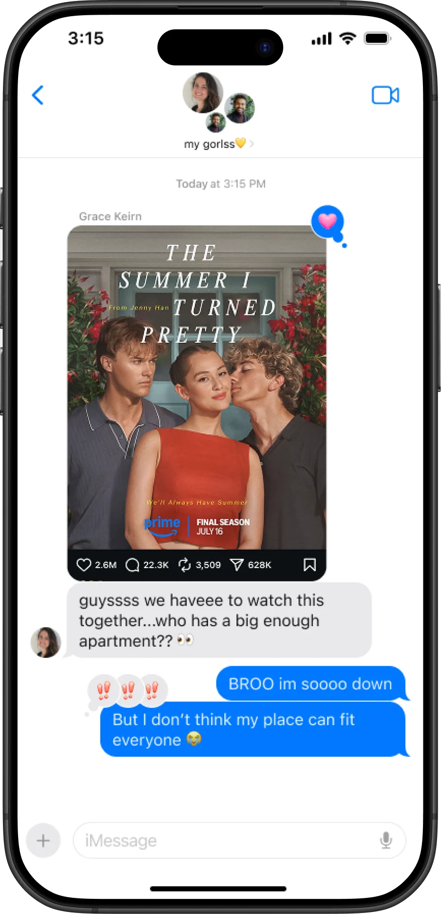
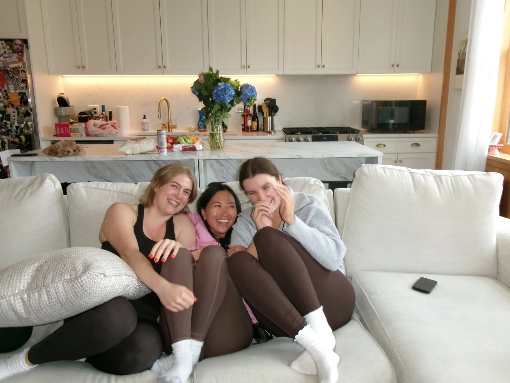
Takeaway · People
People don’t want a bigger screen. They want a place to be together.
Takeaway · Service design
Booking was the obvious scope. Getting friends into one room was the real one.